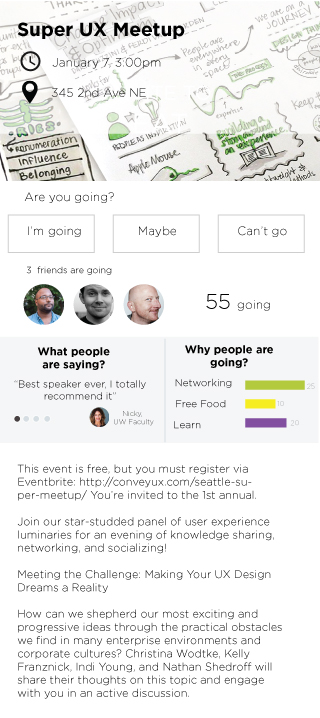

Designing UX Patterns
- Problem: Lack of centralized resources with best practices concerning UX design.
- Solution: Create a tool (website or application) that contains UX patterns with proven solutions to help designers when working on a particular feature of a design.
Introduction
I’m currently a member of a new direct research group at University of Washington, which is focused on creating patterns to help UX designers plan product creation or redesign.
Our group work builds on the need for a centralized resource, such as an application, website, or blog, where UX designers can leverage best practices for developing solutions to specific tasks. We’re painfully aware that many designers start from scratch when building product features. In many cases, successful approaches already exist and have been implemented by other companies. Solving this knowledge gap may be as simple as helping the UX designer know where to look for this valuable information.
Below is a brief list of design problems we’re attempting to address:
- How do we get more users to rsvp and attend to an event?
- How do we increase our app's credibility?
- How do we make users spend more time in our app?
- How do we increase conversion in our newsletter?
- How do we make users post more in our forum?
- How do we get people to rate more movies?
- How do we get more people to review a product?
- How do we get more sign ups?
- How do we get more people to share an app/content with friends?
Our plan is to present UX designers with proven solutions and best practices that can be immediately applied to their products.
How? Currently, we’re driving two methods to achieve this. First, we’ll review academic papers containing studies illustrating helpful solutions that can be translated to design patterns. Secondly, knowing that companies have already solved some of these problems, we’ll attempt to identify and reverse engineer successful products benefiting from great design patterns.
How can we best present these UX Patterns? Should we present only the pattern descriptions or would additional examples benefit the solution? Are wireframes enough or should we include prototypes as well? We’ve already brainstormed about it and we’re are still deciding what the best template would be to present these patterns.
What follows is an example of the process I followed looking a possible solution to a research question:
First each member gets assigned a research question. In my first week I was given:
How do we get more users to rsvp and attend to an event?
Note: Usually the same research question is assigned to at least 3 different people to provide a greater variety of potential solutions, but each person works individually.
Then we need to read academic papers that provide supporting information that backs up our solutions.
For this particular research question, the paper was:
A Theory of Social Comparison Process, by Leon Festinger
Then we have to explain our solution, but we have to include why it should work.
Title: Getting more users to RSVP or attend to an event by providing information about other attendees.
Summary of Solution
Provide to the users information about other attendees, such as list of the people that have already RSVP, listing the reasons other people are going to the event and sharing people’s comments.
How/why this strategy works
- Users not yet committed to attend an event may be more inclined to go by knowing who else is going, particularly their friends.
- Knowing the reasons why other people are attending an event could help the user:
- Discover important reasons to attend that had not previously been considered by the user
- Find that other people share their reason to go to an event
- Be motivated by reading comments from other people attending (or that have attended similar events in the past) that could help the user clear doubts or get a better idea of the potential benefits of attending.
Design rationale
This design is based on knowing that people’s decisions are influenced by what other people are doing and saying. Having a way to know who is attending an event could affect a person's decision for going. For instance, a girl unsure about RSVP’ing to an event might be more inclined to attend if a friend is going or someone is attending that she’d like to meet. Usually a person is interested in attending an event for reasons such as learning a about something new, knowing more about something, networking, etc. It is possible, however, that a person might not consider all the benefits of attending a specific event, By knowing the reasons why other people are going, they discover new reasons to attend, or find encouragement from other people with similar intentions. For instance, a user may be unsure about the benefits of attending an information session but by looking at the reason others are going he can discover new benefits such as free food, networking with others, and other unexpected things he may enjoy. Our potential attendee is now motivated to join thanks to the added benefit of knowing other people's interests and intent.
Having access to discussions and opinions from other potential attendees can be valuable to the user when making a decision. For instance, other attendees could be commenting about how well that speaker has talked in other conferences, or how the place where the event is being held is the best place ever, and thus incentivising the user to attend the event. In conclusion, providing context specific information about the people attending an event can increase the number of people that RSVP to an event.

First wireframe:
However, when asking for feedback I was told:
"People will probably not scroll down or change the tabs to see the information. If you consider that is really important, then you should bring it to the top"
Second wireframe, after making changes based on feedback:
